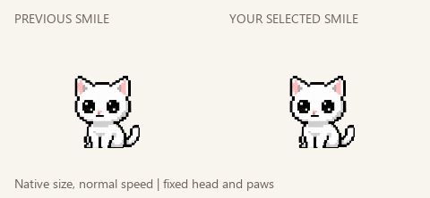
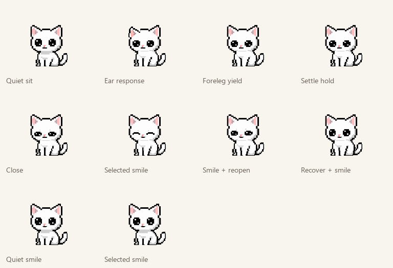

That exact tiny smile.
Previous mouth on the left; the exact tiny smile selected in your screenshot on the right, held for half the loop (2.9s). Same5.8s loop, same body/eyes/ears/head, no breathing.


All pixels outside the mouth match the accepted version at synchronized times. Other animations remain unchanged.
Checks and provenance